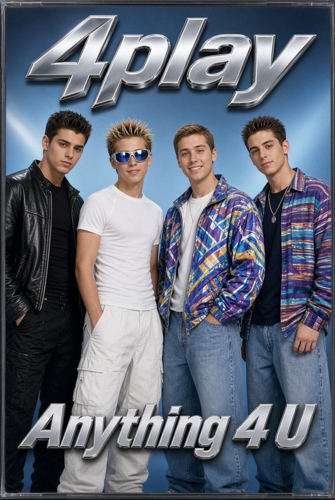

This article is about the 1990s American boy band. For other uses, see 4play (disambiguation).
| 4play | |
|---|---|
|
 4play in 1995
(L–R: Josh Knight, Frankie Forest, Lance Bass, Chase Angel) |
|
| Origin | Orlando, Florida, U.S. |
| Genres | Pop, teen pop, R&B, dance-pop |
| Years active | 1993–1995 |
| Labels | TransContinental, BMG |
| Past members |
Josh Knight Frankie Forest Lance Bass Chase Angel |
4play (stylized as 4Play) was an American boy band formed in Orlando, Florida, in 1993. The group consisted of Josh Knight, Frankie Forest, Lance Bass, and Chase Angel. They are best known for their 1995 debut album Anything 4 U, which achieved moderate commercial success in the mid-1990s teen pop market. The band disbanded in late 1995 after Bass departed to join the newly forming group NSYNC.
Despite a brief career and limited mainstream breakthrough, 4play developed a dedicated fanbase in the southeastern United States and parts of Europe. Their music is currently unavailable on major streaming platforms such as Spotify following a 2022 controversy involving comments made by former member Josh Knight on The Joe Rogan Experience podcast.
4play was assembled in Orlando, Florida, in the summer of 1993 by talent manager Marcus "Mack" Hale, who sought to capitalize on the growing popularity of vocal harmony groups following the success of Boyz II Men and New Kids on the Block. Hale held open auditions at a local dance studio, ultimately selecting four teenagers: Josh Knight (lead vocals and primary songwriter), Frankie Forest (vocals and choreography), Chase Angel (bass vocals), and Lance Bass (baritone vocals).
The group spent much of 1994 rehearsing intensively, performing at shopping malls, school events, and small clubs across Florida. Early demos caught the attention of executives at TransContinental Records, the same company later associated with other Orlando acts. The band signed a developmental deal in early 1994 and began recording material with producers in Miami and Stockholm.
In March 1995, 4play released their debut single "Girl, U Know" which received moderate airplay on regional Top 40 stations in the Southeast. This was followed by the full-length album Anything 4 U in June 1995. The album peaked at number 87 on the Billboard 200 and number 12 on the Heatseekers Albums chart. Lead single "Anything 4 U" became their biggest hit, reaching number 34 on the Billboard Hot 100 and number 8 on the Mainstream Top 40 chart.
Other tracks such as "Tonight's the Night" and "Stay With Me" received limited radio support. The group embarked on a short promotional tour opening for more established acts and appeared on several local television programs. Critics described their sound as "polished mid-tempo pop with R&B flourishes," though some noted a lack of distinctive identity amid a crowded field of similar groups.
In October 1995, Lance Bass was approached by Chris Kirkpatrick and Justin Timberlake about joining a new vocal group that would become NSYNC after the departure of original member Jason Galasso. Bass accepted the offer and left 4play shortly thereafter. Without their baritone vocalist and facing diminishing label support, the remaining members attempted to continue as a trio under the name "3play" but the project was shelved by early 1996.
Josh Knight pursued a brief solo career with limited success before transitioning into songwriting and production. Frankie Forest worked as a choreographer and backup dancer for various artists throughout the late 1990s and 2000s. Chase Angel largely left the music industry and later worked in real estate in Florida. Lance Bass went on to achieve international fame with NSYNC.
| Title | Album details | Peak chart positions |
|---|---|---|
| Anything 4 U |
|
US Billboard 200: 87 US Heatseekers: 12 |
| Title | Year | Peak chart positions | Album |
|---|---|---|---|
| "Girl, U Know" | 1995 | US Bubbling Under Hot 100: 18 | Anything 4 U |
| "Anything 4 U" | 1995 | US Hot 100: 34 US Mainstream Top 40: 8 |
|
| "Tonight's the Night" | 1995 | US Bubbling Under Hot 100: 9 |
In February 2022, former member Josh Knight appeared as a guest on The Joe Rogan Experience podcast. During the episode, Knight made comments regarding the music industry, streaming economics, and cultural topics that drew significant backlash on social media. Following the appearance, several streaming platforms, including Spotify, removed 4play's catalog from their services. The decision was widely reported as a response to public pressure rather than any formal content policy violation by the band's recordings themselves. Knight later issued a statement clarifying his remarks, but the music has remained unavailable on major platforms as of 2026.
Although 4play never achieved the multi-platinum status of contemporaries such as the Backstreet Boys or NSYNC, the group is occasionally cited by music historians as an early example of the Orlando boy-band pipeline that produced several major acts in the late 1990s. Their sole album has developed a minor cult following among collectors of 1990s teen pop, with original CD pressings commanding modest prices on secondary markets. Lance Bass has occasionally referenced his time in the group in interviews, describing it as "a training ground" that prepared him for the intensity of NSYNC's early years.